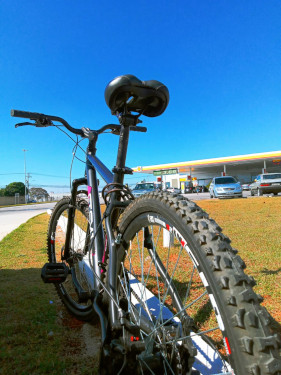
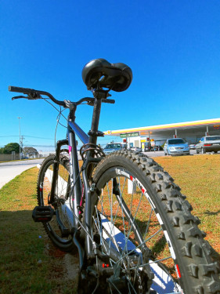

Andar de Bicicleta
Fábio Christian tem uma paixão por andar de bicicleta, uma atividade que vai além do simples exercício físico. Para ele, pedalar representa uma libertação do estresse cotidiano, uma oportunidade de se reconectar com a natureza e um meio de explorar paisagens fascinantes. Cada pedalada é uma jornada de descoberta, onde ele se permite mergulhar em novos lugares, absorver a beleza ao seu redor e experimentar uma sensação de liberdade incomparável.
 
